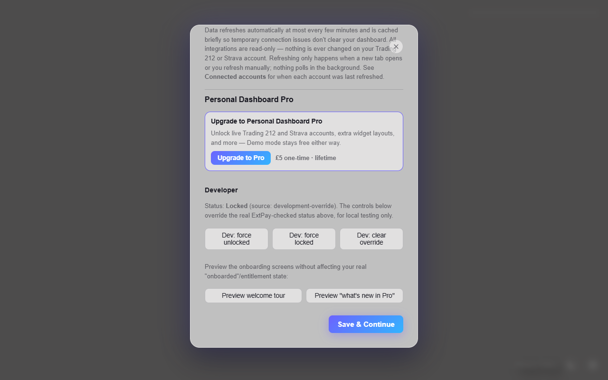
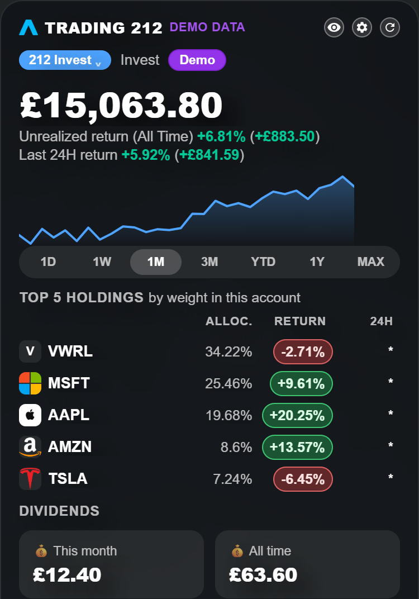
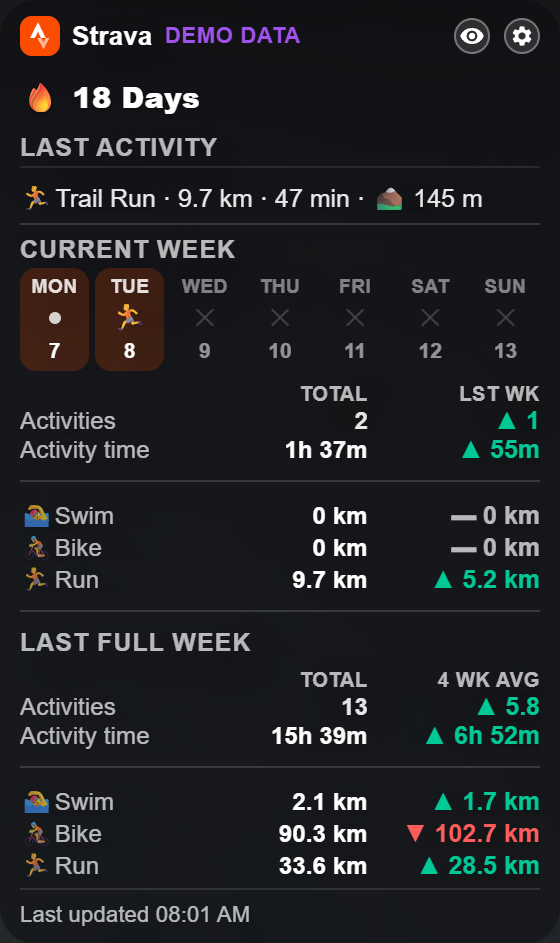
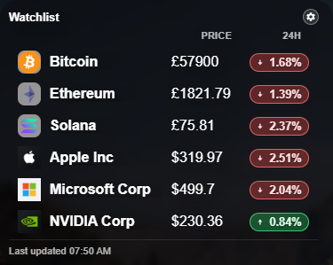
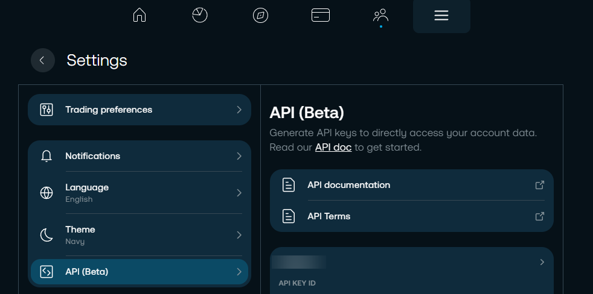
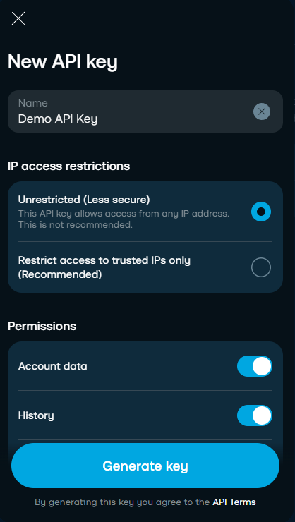
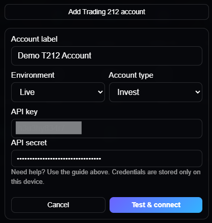

Written guide
Getting started with the Budget Tracker
Download the spreadsheet, enable macros/editing if Excel asks, and enter your first month of income and outgoings.
View TutorialTutorials & instructions
Written guides and video walkthroughs, written in plain English. Search or filter to find what you need.
Download the spreadsheet, enable macros/editing if Excel asks, and enter your first month of income and outgoings.
View TutorialWhat "essential vs non-essential" means, how the annual totals are calculated, and how to read the charts.
View TutorialAdd the extension from the Chrome Web Store, choose a background style, and pick your bookmark folder.
View TutorialAdd up to 10 crypto or stock tickers, reorder them, and remove ones you no longer track.
View TutorialVideo walkthroughs of the free tools on the Simple Money Tools YouTube channel — new videos added regularly.
View Tutorial
Written guideWhere the £5 one-time upgrade lives inside the extension, and what it unlocks.
View Tutorial
Written guideGenerate a read-only API key with the right scopes, and paste it into Connected accounts.
View Tutorial
Written guideRegister your own free Strava app, then authorise read-only access from the extension.
View TutorialNo tutorials match your search or filter yet. Try clearing the search box.
Download the free Budget Tracker from Gumroad and open it in Excel. If Excel shows a yellow "Protected View" or "Enable Content" bar, click through it — this is standard for downloaded spreadsheets, not specific to this file.
"Essential" spending covers the fixed, hard-to-avoid costs you've categorised as such (rent, bills, groceries, etc). "Non-essential" is everything else you've tagged. The split is based entirely on how you categorise each expense row — the tracker doesn't decide this for you.
"Left over" is simply income minus total spend, shown both monthly and projected annually based on your monthly figure.

From Settings → Watchlist, search for a crypto or stock ticker and add it. Drag to reorder, and remove any you no longer track. Up to 10 tickers are supported.

Pro is an upgrade inside the same extension, not a separate install. Open Settings → Personal Dashboard Pro and use the upgrade button there. It costs £5 once, with no subscription, and unlocks immediately after payment — you don't need to reload the page.
Everything free stays free afterwards, and Demo mode lets you see how both integrations look before you pay anything.
Read-only access only — the extension never asks for permission to place trades, modify orders or move money.



Trading 212's API covers Invest and Stocks ISA accounts. SIPP and CFD accounts aren't exposed by it and aren't supported.
A live Strava connection uses your own free Strava API app, so there's no approval wait. Only read scopes are requested.


Streaks, weekly trends and the fitness estimate are the extension's own calculations from your activity data — not official Strava metrics, and not health advice.
Troubleshooting
This usually means a row was deleted rather than cleared. Undo (Ctrl+Z) if it just happened, or re-download a fresh copy and re-enter your figures.
Check chrome://extensions to confirm Personal Dashboard is enabled, and check Chrome's own new-tab setting hasn't been overridden by another extension.
Double-check the symbol is correct and that you're under the 10-ticker limit on the free version. Some very new or low-volume assets may not be supported.
Get in touch through the contact page and select "Bug report" or "Tool support" — include which tool and what you were doing when it happened.
FAQ
Yes. The Budget Tracker is free to download and use, with no account or sign-up required.
No — install it from the Chrome Web Store and it works immediately. Nothing is required to connect for the free features.
The Pro update is with Chrome for review. It is an upgrade inside the existing extension rather than a separate install, and costs £5 once — no subscription. Install the free extension now and the upgrade appears in Settings when it lands.
No. The integration is read-only: it reads the portfolio information Trading 212 exposes through its API, and cannot place trades, move funds or change your account. You generate the API key yourself and choose its scopes — the two trading-capable ones stay switched off. See the Trading 212 guide and the Pro privacy policy.
Personal Dashboard is built for Google Chrome and other Chromium-based browsers (e.g. Edge, Brave) that support the Chrome Web Store.
Use the contact form and choose "Bug report" from the topic list, or email the support address listed there.